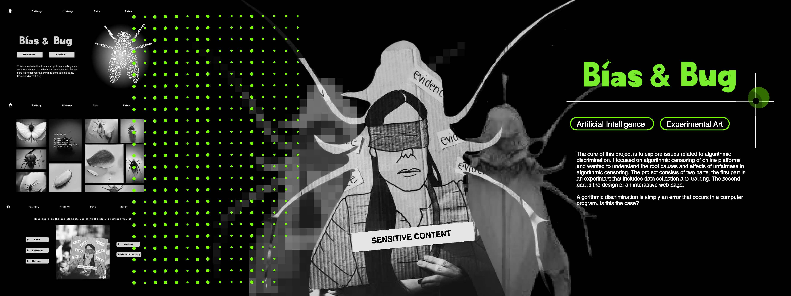
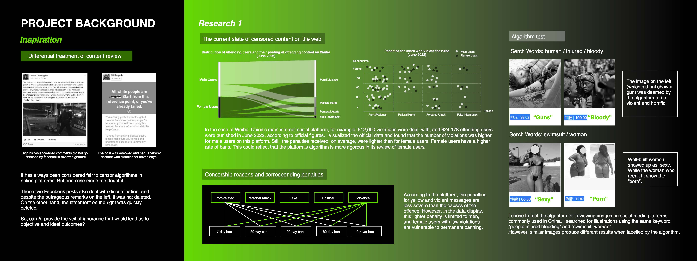
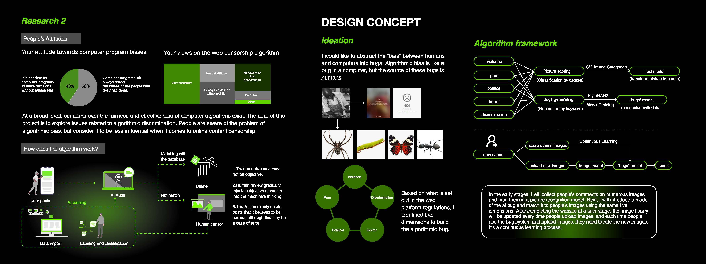
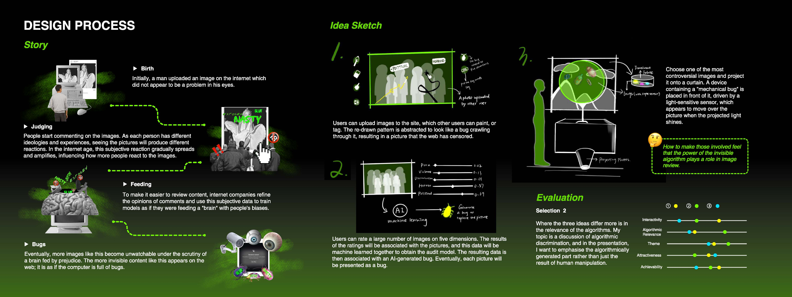
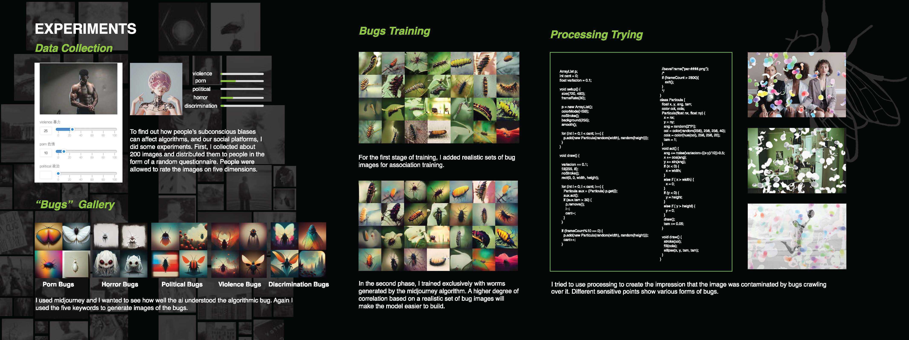
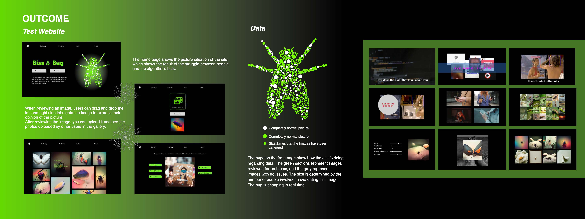

Bias&Bug
Web Design/Algorithmic Bias/Interactive Design
Artificial Intelligence
The core of this project is to explore issues related to algorithmic discrimination. I focused on algorithmic censoring of online platforms and wanted to understand the root causes and effects of unfairness in algorithmic censoring.The project consists of two parts; the first part is an experiment that includes data collection and training. The second part is the design of an interactive web page.
Algorithmic discrimination is simply an error that occurs in a computer program. Is this the case?





